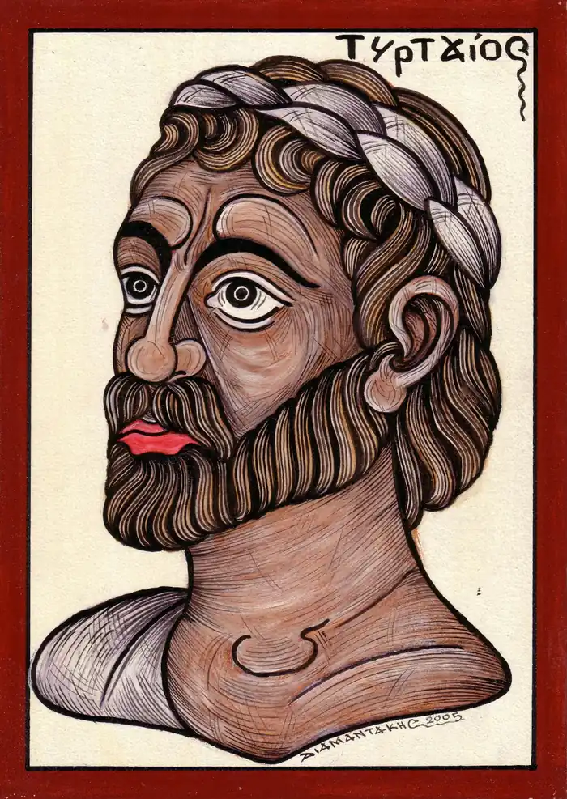

Тіртей (друга половина VII ст. до н. е.) — давньогрецький поет, автор ямбів, елегій.
Тіртей уславив себе написанням елегій — ліричних віршів, в яких переважає настрій смутку, жалю. Елегія виконувалася в супроводі фригійської флейти. У творах Тіртея яскраво звучить тема захисту батьківщини. У його поетичних творах поєднуються сумні роздуми із закликом до рішучих дій. Звертаючись до спартанського воїна, закликаючи його до стійкості у боротьбі, Тіртей використовує антитезу, за допомогою якої змальовує долю втікача, змушеного поневірятися на чужині, терпіти зневагу замість того, щоб "в бою смерть за вітчизну прийняти". У вірші "Добре вмирати тому…" Тіртей закликає до героїзму. Апелюючи до героїв давніх міфів, поет прагне пробудити бойовий дух спартанців, переконати їх у необхідності бойових змагань. Вищим щастям він вбачає загибель на полі бою заради міста та його громадян. У такий спосіб воїн прославить не тільки себе, але й свої близьких.
Тіртей прославляє бойову звитягу, закликає воїнів дотримуватися бойового кодексу, основні вимоги якого він подавав у віршовій формі, аби вони легше запам'ятовувалися. Воїни виконували вірші часто під час військових маршів. Такі маршеві пісні мали не елегійний, а інший метр — анапест (два короткі, один довгий склад), який був зручним для військового використання. Пісні Тіртея про звитяги воїна спартанці співали і під час відпочинку, і після молитов. У Греції твори Тіртея були широко розповсюджені. Давній оратор Лікург говорив про патріотичність творів Тіртея, їх виховне значення. Біографічні відомості про Тіртея скупі. Поет був афінськкчг громадянином. За легендою він був кульгавим шкільним учителем, якого послали з Афін до Спарти замість військової підтримки. Так порадив оракул. І він не помилився. Тіртей та його пісні надихнули спартанців на перемогу.